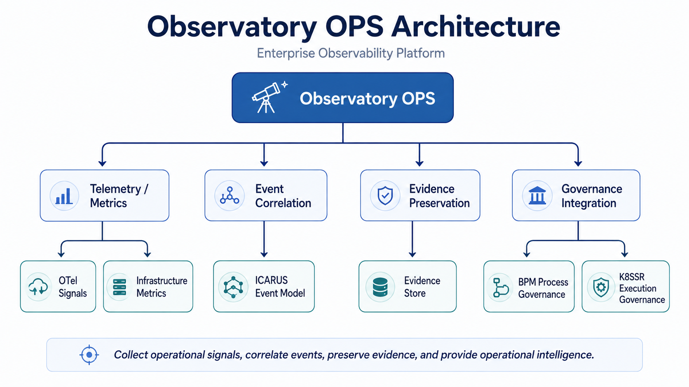
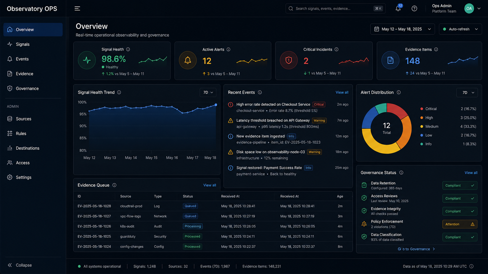

Observatory OPS is an engineering platform for collecting
operational signals, correlating events, preserving evidence,
and integrating operational visibility with governance workflows.
天文台 OPS 的目標，是將監控、事件、證據與治理整合到一致的
Operational Intelligence 架構中。
Observatory OPS extends traditional monitoring into a broader operational engineering model. Instead of only showing alerts and metrics, the platform is designed to preserve event context, operational evidence, and governance relationships.
Collect operational signals and infrastructure metrics.
Connect events with operational and system context.
Preserve evidence for traceability, investigation, and review.
Connect observability with process and execution governance.
Observatory OPS acts as an operational visibility layer connecting telemetry, canonical event modeling, evidence preservation, and governance systems.

The dashboard concept presents signal health, alerts, operational events, evidence items, and governance status through one consolidated operational view.

* Dashboard image is a conceptual UI preview used to illustrate the intended Observatory OPS operational experience.
Observatory OPS combines observability technologies with event modeling, evidence preservation, security operations, and execution governance.
Observatory OPS evolved from earlier security monitoring and portal engineering work into a broader operational intelligence and governance architecture.
| Project | Role |
|---|---|
| Observatory OPS | Operational visibility and intelligence layer |
| ICARUS | Canonical event model and event continuity |
| BPM | Process governance and authorization workflows |
| K8SSR | Execution governance and runtime control |
| ENYRAX Portal | User-facing operational platform |
| SOC Monitoring SIEM Lab | Security monitoring and SIEM foundation |
Observatory OPS is an evolving architecture and engineering portfolio project. Current work focuses on operational signal modeling, event correlation, evidence preservation, governance integration, and platform documentation.
Active Engineering Project